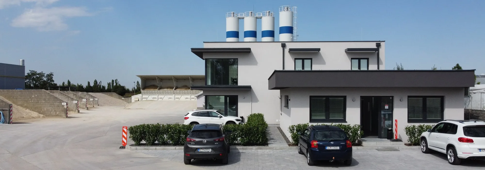

Bauchemia T.B.
Dodávateľ stavebnej chémie a prísad.
EUROBETON Senec
Jadrom prevádzky je automatizovaná linka BHS 2.0. Na výrobu nadväzuje vlastná doprava, čerpanie betónu a dodávky kameniva.

O spoločnosti
Hlavnou činnosťou spoločnosti EUROBETON Senec je výroba certifikovaných betónových zmesí. Firma výrobu dopĺňa vlastnou dopravou a čerpaním betónu aj predajom a dovozom kameniva, štrkopieskov a ďalších sypkých materiálov.
Vozový park podľa údajov firmy zahŕňa betonpumpy PUTZMEISTER, autodomiešavače MAN a Tatra Phoenix aj sklápače pre suché zmesi a kamenivo.
BHS 2.0
Nemecká technológia riadená počítačom automatizuje dávkovanie a váženie kameniva, cementu a prísad.
Betonáreň prešla podľa pôvodného webu v rokoch 2014/2015 kompletnou rekonštrukciou. Úpravy zvýšili hodinový výkon, zjednodušili obsluhu a skvalitnili výrobu.
Výrobný systém umožňuje spätne overiť dodané množstvo aj kvalitu betónu. Pre zimnú prevádzku slúži ohrev zámesovej vody a kameniva, zateplenie a vykurovanie betonárne.

Práca so zvyškami
Zvyšky z betonáží spracúvajú dve automatické recyklačné zariadenia Eltemix. Kalová voda sa podľa údajov firmy spätne používa pri výrobe betónu v súlade so zásadami normy uvádzanej na pôvodnom webe.
Tento uzavretejší postup obmedzuje vznik nežiaduceho odpadu z prevádzky a vracia časť vody späť do výroby.
Spolupráca
Názvy a úlohy sú prevzaté z pôvodného firemného webu; pred zverejnením redizajnu je vhodné potvrdiť ich aktuálnosť.
Dodávateľ stavebnej chémie a prísad.
Certifikácia betónov.
Dodávatelia technológie.
Dôveryhodnosť
Na jednom mieste sú pripravené certifikáty pre betón STN 206 + A2, CBGM, CB III a medzerovitý betón. Súbory pochádzajú z pôvodného webu a nesú dátum 15. 5. 2026.
Konkrétna zákazka
Kontaktujte prevádzku a uveďte materiál, množstvo, adresu a termín.